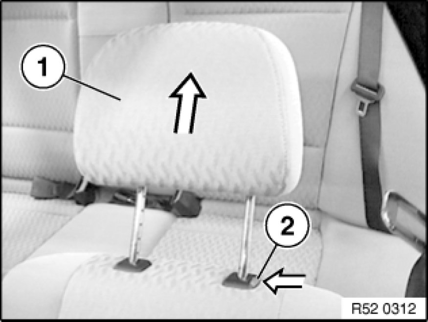

Removing and Installing/Replacing Front Headrest (Normal/Manual)
52 13 390 - Removing and installing / replacing front headrest (normal/ manual)

Move backrest back.
Move headrest (1) as far upwards as possible.
Unlock lock (2) and remove headrest (1).